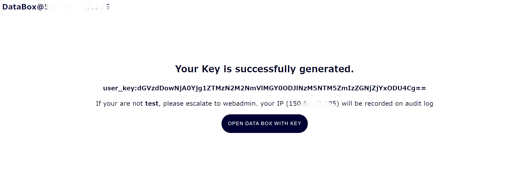
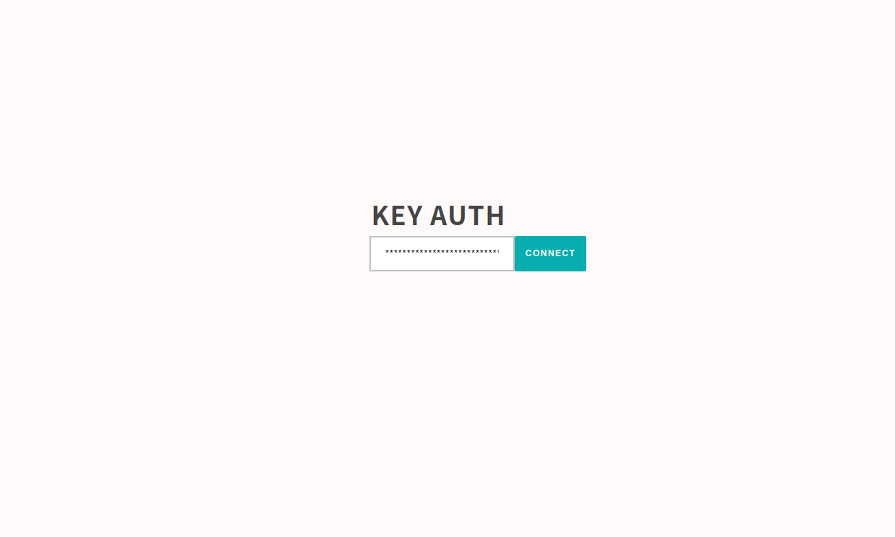
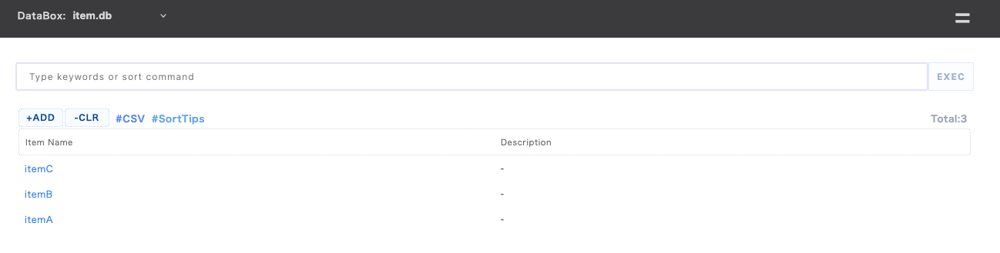
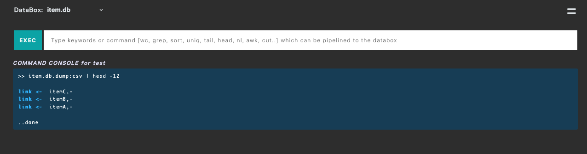

Use Container
This quick start guide will walk you through setting up Small-Shell on container.
Create definitions
First of all, please create files on host. Container will be generated by executing scripts which will read databox definition(db.def) and app definition (app.def). In the building process you can create databox and several apps at once.
1.Dockerfile
FROM ubuntu:24.04
ENV DEBIAN_FRONTEND=noninteractive
RUN apt-get update && apt-get install -y \
curl \
bc \
file \
git \
jq \
php \
nodejs \
npm \
&& apt-get clean \
&& rm -rf /var/lib/apt/lists/*
RUN useradd -s /sbin/nologin small-shell
COPY --chown=small-shell:small-shell ./db.def /workspace/db.def
COPY --chown=small-shell:small-shell ./app.def /workspace/app.def
WORKDIR /usr/local
RUN git clone https://github.com/small-shell/small-shell.git
RUN chmod 755 /usr/local/small-shell/adm/gen
RUN /usr/local/small-shell/adm/gen
RUN /usr/local/small-shell/util/scripts/gen_db.sh /workspace/db.def
RUN /usr/local/small-shell/util/scripts/gen_container_app.sh /workspace/app.def
USER small-shell
# post_processing.sh will be generated gen process of small-shell app on container
RUN /var/tmp/post_processing.sh
VOLUME /usr/local/small-shell/users /usr/local/small-shell/databox /var/www/def
WORKDIR /var/www/app
CMD ["node", "index.js"]
2.db.def
In the following example, item.db will be generated. If you will not define primary key, just set "hashid" to "primary_key". And if you want to add column, please add colN with "+addcol" declaration. For more details, please see the DATA Shell documentation.
# databox
databox="item.db"
# col1
#-------------------------------------------
# If you will not need primary key, please just set "hashid" to primary_key
primary_key="item_name"
primary_key_label="Item Name"
#-------------------------------------------
+addcol
# col2
#-------------------------------------------
col2_key_name="description"
col2_key_label="Description"
# Available types ( text | select | radio | checkbox | email | num | tel | date | date-time | url | textarea | file )
col2_type="text"
# Only for radio and select. you must use comma as separator
col2_values=""
# Please set yes or no
col2_required="no"
#-------------------------------------------
3.app.def
In the following example, only Base App will be generated. please change server and port param to available server FQDN and port. If you want to enable ssl, please uncomment "ssl_cert_path" and "ssl_privatekey_path". For more details of Apps, please see the APP Shell documentation. please set "server" and "port" param at least.
# Base App
server="test.example.com"
port="8080"
# If you want to enable ssl, please uncomment these params.
#ssl_cert_path=""
#ssl_private_key_path=""
# And if you need to use chain cert, please uncomment this param as well.
#chain_cert_path=""
# Custom App
app_name=""
# authe type is as following. please set just a number.
# 1:shared pass, 2:user key, 3:other, 4:none
auth_type=""
databox_for_custom_app=""
# If auth type is 1, please uncomment shared_pass.
#shared_pass=""
# External Form
form_name=""
form_title=""
databox_for_external_form=""
description=""
# Please specify the keys separated by commas.
keys=""
# Sub App
parent_app=""
databox_for_sub_app=""
Run a docker image
Once files are created, let's generate small-shell image.
# generate a image
ls Dockerfile db.def app.def
docker build -t small-shell-image .
# run a docker image
docker run -d \
--name web-instance \
-p 8080:8080 \
-v databox_volume:/usr/local/small-shell/databox \
-v users_volume:/usr/local/small-shell/users \
-v def_volume:/var/www/def \
small-shell-image
Add a user from host
The following example shows how to add the username "test", "test" can initialize and get base64 key by accessing the URL that will be generated by the command.
docker exec -u root web-instance /usr/local/small-shell/adm/ops add.usr:test
Please notice that the URL can be accessed only 1 time.
-------------------------------------------------------------------------------
This is the URL for key initialization and generation for test on Base App
-------------------------------------------------------------------------------
http://${your_server_FQDN}:8080/cgi-bin/auth.base?initialize=*****26fd2,4c5a2ae68d20e530b4ce457c71eae42590135268e1fb933a945f7e188678ccf4
End user can access to Base App by clicking the button and key will be stored to local storage of browser.

Access to Base App
The authentication page image of Base App is shown below. The access URL will be shown in the end of the gen dialog but basically it will be "http://${your_server_FQDN}/base". The key will be inserted automatically if it's stored in local storage.

Base App Features
End user can use following features on Base App.
- Push or Get data through simple UI
- Use spaces to perform an AND search [e.g. word1 word2]
- Multiple sorting options using sort command
- Search using specific key of column [e.g key{wordA}]
- Download search result by CSV format
- Import Data with CSV format
- Define number of line per page [e.g #line:20] [e.g word #line:20]

- Analyze data using linux commands [grep, wc, awk, uniq, sed, tail, head, nl, sort, cut ..]
- Search log with freewords by adding tag [e.g. word1 word2 #log]
- Show statistics #stats, if you define statistics job.

Re-generate initialize URL
If end user lost their key, you can re-generate initialize URL by following command. In this example, admin will re-generate initialize URL for user name "test"
docker exec -u root web-instance /usr/local/small-shell/adm/ops add.usr:test
Create Custom App
You can create Custom App at once when generating container. In that case, please edit definition of app.def. Custom App is editable app that you can add many functions to the app. See detail in here.